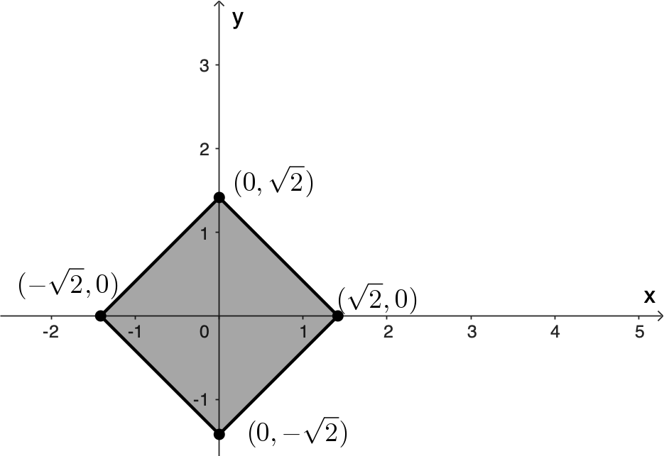
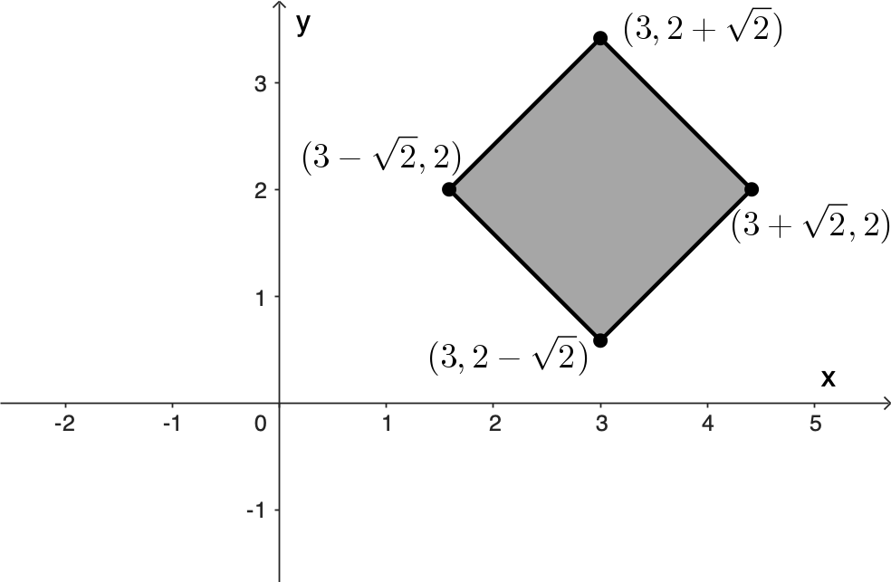

Introduction
An affine transformation is a type of mapping that preserves geometric properties such as points, straight lines, and planes. Importantly, it maintains the parallelism of lines, meaning that sets of parallel lines remain parallel after the transformation.
This technique is commonly applied to correct geometric distortions or deformations caused by non-ideal camera perspectives. For instance, in satellite imagery, affine transformations help adjust for distortions from wide-angle lenses, align images in panorama stitching, and support accurate image registration. By transforming and aligning images within a flat, consistent coordinate system, distortion is minimised, simplifying interaction and enabling more straightforward calculations without the need to compensate for image warping.
Affine transformations are fundamental tools in geometry, computer graphics, and computer vision, providing a powerful way to describe coordinate system mappings while preserving key geometric relationships. Unlike linear transformations, which are restricted to origin-preserving operations like rotation, scaling, and shearing, affine transformations additionally incorporate translations, enabling arbitrary shifts of the space.
This generalisation makes affine transformations particularly useful for:
- Representing more general geometric deformations
- Modelling transformations where position changes matter
We will explore their mathematical formulation, geometric properties, and some practical applications, focusing on both theoretical understanding and implementation aspects.
Affine transformations
Consider a point $\mathbf x=(x,y).$ A transformation $T: \mathbb R^2 \to \mathbb R^2$ of the form \[ \mathbf{T\left( \mathbf x\right)} = \begin{pmatrix} ax + by + e \\ cx + dy + f \end{pmatrix} \] where $a,b,c,d,e$ and $f$ are real numbers, is called a two-dimensional affine transformation.
For example, if $a,d = 1,$ and $b,c=0,$ then we have a pure translation \[ \mathbf{T\left( \mathbf x\right)} = \begin{pmatrix} x + e \\ y + f \end{pmatrix} \]
If $b,c=0$ and $e,f=0$ then we have a pure scale \[ \mathbf{T\left( \mathbf x\right)} = \begin{pmatrix} ax \\ dy \end{pmatrix} \]
If $a,d = \cos \theta,$ $b = -\sin \theta,$ $c = \sin \theta,$ and $e,f=0,$ then we have a pure rotation about the origin \[ \mathbf{T\left( \mathbf x\right)} = \begin{pmatrix} x\cos\theta -y \sin \theta \\ x\sin \theta + y \cos \theta \end{pmatrix} \]
Finally, if $a,d=1,$ and $e,f=0$ we have the shear transforms \[ \mathbf{T\left( \mathbf x\right)} = \begin{pmatrix} x+ by \\ y+ cx \end{pmatrix} \]
In summary, we have the four basic affine transformations:
- Translate: moves a set of points a fixed distance in $x$ and $y,$
- Scale: scales a set of points up or down in the $x$ and $y$ directions,
- Rotate: rotates a set of points about the origin,
- Shear: offset a set of points a distance proportional to their $x$ and $y$ coordinates.
Matrix representation of linear transformations
The affine transformations such as scaling, rotation, and shearing are in fact linear transformations, and they can be represented as matrix multiplications with column vectors. For instance, a linear transformation \( T \) applied to a vector \( \mathbf{x} = (x, y)^T \) can be written as \[ T(\mathbf{x}) = \begin{pmatrix} ax + by \\ cx + dy \end{pmatrix} = \begin{pmatrix} a & b \\ c & d \end{pmatrix} \begin{pmatrix} x \\ y \end{pmatrix}, \] or more compactly, \( T(\mathbf{x}) = A \mathbf{x} \), where \( A \) is the \( 2 \times 2 \) matrix \[ A = \begin{pmatrix} a & b \\ c & d \end{pmatrix}. \]
One of the key advantages of using matrices for representing transformations is that we can express a complex transformation as a composition of simpler ones. For example, suppose that we wish to scale an object, then shear it, and finally rotate it. Let \( S \) be the scaling matrix, \( H \) the shearing matrix, and \( R \) the rotation matrix. Then the transformation can be written as \[ T(\mathbf{x}) = R(H(S \mathbf{x})). \] This represents the following sequence of operations: 1. Scale, 2. Shear, 3. Rotate.
Since matrix multiplication is associative, we can remove the parentheses and compute the product of the three matrices once: \[ M = R H S, \] allowing us to rewrite the transformation as $T(\mathbf{x}) = M \mathbf{x}.$
This approach is especially efficient when transforming a large number of points, such as in a complex graphical model. Instead of applying multiple transformations sequentially, we can compute a single composite matrix \( M \) and apply it directly. This demonstrates the power of matrices to encapsulate and simplify complex transformations in a compact and computationally efficient form.
In matrix form, then we can calatog the linear transforms as
where $s_x$ and $s_y$ scale the $x$ and $y$ coordinates of a point, $\theta$ is an angle of counterclockwise rotation around the origin, $h_x$ is a horizontal shear factor, and $h_y$ is a vertical shear factor.
Homogeneous coordinates
Because matrix notation is so convenient for constructing complex transformations from simpler ones, it would be ideal to represent all affine transformations using matrices. However, translation poses a challenge since it is not a linear transformation. The solution is to reformulate the 2D problem in terms of 3D homogeneous coordinates.
We begin by considering all points \(\mathbf{x} = (x, y)\) in the plane, which we represent as 2D column vectors $ \begin{pmatrix} x \\ y \end{pmatrix}. $ To enable affine transformations such as translation to be represented using matrix multiplication, we embed these 2D vectors into 3D space using homogeneous coordinates by appending a third coordinate, conventionally set to 1: \[ \begin{pmatrix} x \\ y \end{pmatrix} \quad \Rightarrow \quad \begin{pmatrix} x \\ y \\ 1 \end{pmatrix}. \] This third coordinate is typically called \(w\) to distinguish it from the usual \(z\)-coordinate in 3D geometry.
Next, we extend our 2D transformation matrices to 3D by adding an extra row and column, resulting in their homogeneous forms:
When we apply one of these homogeneous transformation matrices to a point in homogeneous coordinates, the result is: \[ \begin{pmatrix} a & b & 0 \\ c & d & 0 \\ 0 & 0 & 1 \end{pmatrix} \begin{pmatrix} x \\ y \\ 1 \end{pmatrix} = \begin{pmatrix} ax + by \\ cx + dy \\ 1 \end{pmatrix}. \]
This is equivalent to the original 2D linear transformation, with the additional \(w\)-coordinate remaining 1. In essence, we are performing standard 2D operations on the \(w = 1\) plane embedded in 3D space.
The real advantage of this approach becomes apparent when we include translation. By placing translation parameters in the third column of the matrix, we can express translations as linear operations in homogeneous coordinates: \[ \begin{pmatrix} a & b & e \\ c & d & f \\ 0 & 0 & 1 \end{pmatrix} \begin{pmatrix} x \\ y \\ 1 \end{pmatrix} = \begin{pmatrix} ax + by + e \\ cx + dy + f \\ 1 \end{pmatrix}. \]
We can now represent translation as a matrix operation and add it to our collection of basic transformations: \[ \text{Translate:} \; \begin{pmatrix} 1 & 0 & \Delta x \\ 0 & 1 & \Delta y \\ 0 & 0 & 1 \end{pmatrix}, \] where \(\Delta x\) and \(\Delta y\) represent translations along the \(x\)- and \(y\)-axes, respectively. The insightful reader will notice the clever trick at play: 2D translation is now represented as a form of shear in 3D space.
For example, suppose we have $2\times 2$ square centred at the origin and we want to first rotate the square by $45^{\circ}$ about its centre and then move it so its centre is at $(2, 3).$
We can do this in two steps, as shown in Figure 8.
|

Step 1
|

Step 2
|
In matrix form we have
Now consider the vertices of the square using homogeneous coordinates
Affine transformations and Fractals
Affine transformations play a fundamental role in the construction of fractals through a method known as an Iterated Function System (IFS). An IFS is a collection of contraction mappings, typically affine transformations, that are applied repeatedly to generate self-similar structures. The elegance of this approach lies in how complex, intricate patterns can emerge from the iteration of simple rules.
Iterated Function Systems
An IFS consists of a finite set of affine transformations \( \{T_1, T_2, \dots, T_n\} \), each of the form: \[ T_i(\mathbf{x}) = A_i \mathbf{x} + \mathbf{t}_i, \] where \( A_i \) is a \(2 \times 2\) matrix representing a linear transformation (scaling, rotation, or shearing), and \( \mathbf{t}_i \) is a translation vector.
There are two common approaches for plotting fractals using IFS:
We now illustrate both approaches through two classical examples.
Sierpiński Triangle: A Deterministic IFS
The Sierpiński triangle is a classic fractal built by repeatedly removing the central triangle from an equilateral triangle.
This fractal can be constructed using a deterministic iterated function system (IFS) that repeatedly applies a small set of affine transformations to an initial shape.
In this version, rather than starting with a triangle, we begin with a simple geometric shape: a circle of radius 100 centred at the origin \( (0, 0) .\) At each iteration, we apply three affine transformations that scale the circle by a factor of \( \frac{1}{2} \) and translate it to a new location. Using homogeneous coordinates, the transformations are defined as follows: \[ \begin{aligned} T_1(\mathbf x) &= \begin{pmatrix} 0.5 & 0 & 0\\ 0 & 0.5 & 0 \\ 0 & 0 & 1 \end{pmatrix} \begin{pmatrix} x \\ y \\ 1 \end{pmatrix}, \\[1ex] T_2(\mathbf{x}) &= \begin{pmatrix} 0.5 & 0 & 0 \\ 0 & 0.5 & 100 \\ 0 & 0 & 1\end{pmatrix} \begin{pmatrix} x \\ y \\ 1 \end{pmatrix}, \\[1ex] T_3(\mathbf{x}) &= \begin{pmatrix} 0.5 & 0 & 100 \\ 0 & 0.5 & 100 \\ 0 & 0 & 1\end{pmatrix} \begin{pmatrix} x \\ y \\ 1 \end{pmatrix}. \end{aligned} \]
Geometrically, these transformations move the original circle into three positions: bottom-left, top-left, and top-right within a larger triangular layout. At each iteration, every existing circle is replaced by three smaller circles, each one scaled down and repositioned using one of the transformations.
After several iterations, the resulting pattern reveals the structure of the Sierpiński triangle, composed entirely of circles. This method illustrates how simple affine transformations applied to geometric primitives can yield complex, self-similar fractals.
It should be noted that this iterative process is not restricted to beginning with a circular shape. In fact, starting with a square or any other closed figure can still lead to the same limiting fractal. This illustrates the robustness of the process with respect to the choice of initial shape. In his work on V-variable fractals and superfractals, Michael Barnsley, et al. (2003) famously demonstrated this flexibility using the image of a fish as the initial figure.
In the link below, you can explore an online-interactive implementation of the deterministic IFS for the Sierpiński triangle:
You can modify the parameters defining the affine transformation and explore how they affect the plot of the fractal.
Barnsley Fern: A Probabilistic IFS
The Barnsley fern is a well-known example of a natural-looking fractal generated using a probabilistic IFS. It consists of four affine transformations, each applied with a specified probability. These transformations are iteratively applied to a single point, and the accumulation of these points produces the characteristic fern shape.
The four affine transformations are defined as:
Each transformation is associated with a probability, as shown below:
| Probability | |
|---|---|
| T1 | 0.01 |
| T2 | 0.85 |
| T3 | 0.07 |
| T4 | 0.07 |
The table below is a tidier way of conveying the same iterated function system, including the probabilities $p_k$ associated to $T_k.$
| T | a | b | c | d | e | f | p |
|---|---|---|---|---|---|---|---|
| 1 | 0 | 0 | 0 | 0.16 | 0 | 0 | 0.01 |
| 2 | 0.85 | 0.04 | -0.04 | 0.85 | 0 | 1.6 | 0.85 |
| 3 | 0.2 | -0.26 | 0.23 | 0.22 | 0 | 1.6 | 0.07 |
| 4 | -0.15 | 0.28 | 0.26 | 0.24 | 0 | 0.44 | 0.07 |
To generate the fern, we begin with an initial point, typically the origin, and repeatedly apply one of the four transformations, selected at random according to the given probabilities. Each new point becomes the input for the next iteration. After tens of thousands of iterations, the resulting plot reveals the familiar leafy structure of a fern.
This method beautifully illustrates how simple affine transformations, when combined through a probabilistic IFS, can model the complexity of natural forms. Alongside the deterministic construction of the Sierpiński triangle, the Barnsley fern underscores the power of affine transformations in the algorithmic generation of fractals. These examples highlight how affine transformations and IFS can be used to algorithmically generate fractals, offering deep insight into both mathematical structure and natural phenomena.
The probabilistic IFS can be used to generate not only the Barnsley fern, but also a wide variety of fractals. Two notable examples are the fractal tree and the Sierpiński triangle. The affine transformations needed to construct these are listed in Tables 3 and 4.
| T | a | b | c | d | e | f | p |
|---|---|---|---|---|---|---|---|
| 1 | 0 | 0 | 0 | 0.5 | 0 | 0 | 0.05 |
| 2 | 0.42 | -0.42 | 0.42 | 0.42 | 0 | 0.2 | 0.4 |
| 3 | 0.42 | 0.42 | -0.42 | 0.42 | 0 | 0.2 | 0.4 |
| 4 | 0.1 | 0 | 0 | 0.1 | 0 | 0.2 | 0.15 |
| T | a | b | c | d | e | f | p |
|---|---|---|---|---|---|---|---|
| 1 | 0.5 | 0 | 0 | 0.5 | 0 | 0 | 0.33 |
| 2 | 0.5 | 0 | 0 | 0.5 | 0.5 | 0 | 0.33 |
| 3 | 0.5 | 0 | 0 | 0.5 | 0.25 | 0.433 | 0.34 |
|
Fractal Tree
|

Sierpiński triangle
|
Explore the online-interactive implementations of the probabilistic IFS:
References
- Ban, S., & Kim, T. (2024). Rational-Function-Model-Based Rigorous Bundle Adjustment for Improving the Relative Geometric Positioning Accuracy of Multiple Korea Multi-Purpose Satellite-3A Images. Remote Sensing, 16(16), 2890. https://doi.org/10.3390/rs16162890
- Barnsley, M. (1993). Fractals Everywhere. (Chapter III). 2nd ed. Morgan Kaufmann. USA.
- Barnsley, M., Hutchinson, J. E., & Stenflo, Ö. (2003). V-variable fractals and superfractals. https://arxiv.org/abs/math/0312314
- Howard, A., & Rorres, C. (2014). Elementary Linear Algebra. 11th ed. Wiley. USA. pp. 624–639.
- Rogers, D. F. (1976). Mathematical Elements for Computer Graphics. McGraw Hill.